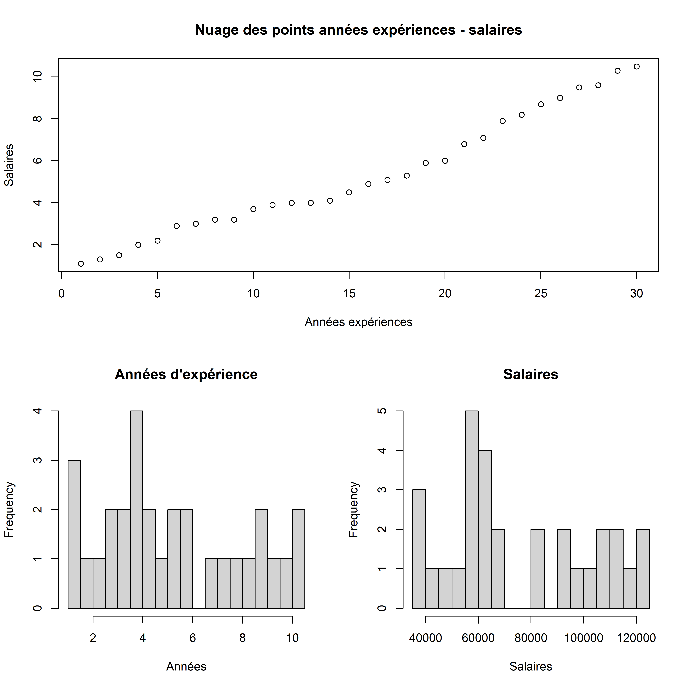
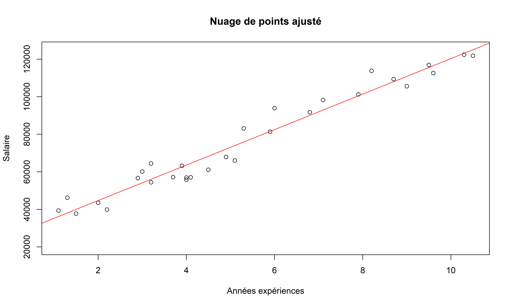

2 Les moindres carrés ordinaires
2.1 Historique de la méthode
La première publication de la méthode des moindres carrés (destinée à déterminer des quantités dans un système d’équations surdéterminé) est due à Legendre qui l’a donnée en annexe d’un ouvrage intitulé Nouvelles méthodes pour la détermination des orbites des comètes (1805).
2.2 Les moindres carrés ordinaires simples
2.2.1 Formalisation
La méthode des moindres carrés utilise de l’optimisation mathématique. Il s’agit en effet de trouver un vecteur de paramètres qui minimise la fonction objective qui est la somme des carrés des résidus.
Certaines formalisations utilisent une autre fonction objective mais dans la plupart des cas nous cherchons à réduire la somme des carrés des résidus (SCR). L’intérêt de minimiser la SCR est qu’il s’agit d’une fonction convexe qui admet donc un minimum global.
L’optimisation se fait en utilisant la méthode de Lagrange.
Dans les lignes suivantes nous exposons les étapes utilisées pour arriver au résultat optimal.
\[\begin{align} min_{\hat{a}, \hat{b}} \sum_{u_i=1}^{N} \hat{U}_{i}^2 \\ \hat{U_i} = y_i-\hat{y_i} \\ min_{\hat{a}, \hat{b}} \sum_{u_i=1}^{N} (y_i - \hat{y_i})^2 \\ \end{align}\]
Nous savons que la forme finale de l’équation que nous voulons estimer est la suivante : \[\hat{y_i} = \hat{a} + \hat{b}x_i\]
Ainsi en réécrivant l’équation initiale notre programme d’optimisation est le suivant :
\[min_{\hat{a}, \hat{b}} \sum_{u_i=1}^{N} (y_i - \hat{a} - \hat{b}x_i)^2\]
Nous posons les conditions de premier ordre (CPO) du Lagrangien.
\[\begin{align} \frac{\partial L}{\partial \hat{a}}= 0 \\ -2 \sum_{u_i=1}^{N} (y_i - \hat{a} - \hat{b}x_i) = 0 \\ \sum_{u_i=1}^{N} (y_i - \hat{a} - \hat{b}x_i) = 0 \\ \sum_{u_i=1}^{N} y - \sum_{u_i=1}^{N} \hat{a} - \sum_{ui_=1}^{N} \hat{b}x_i = 0\end{align} \]
Etant donné que \(\hat{a}\) est une constante, la somme allant de 1 à N est égale à \(N\hat{a}\)
\[\begin{align} \sum_{u_i=1}^{N} y_i - N\hat{a} - \hat{b} \sum_{u_i=1}^{N} x_i = 0 \\ N\bar{y} - N\hat{a} - \hat{b}N\bar{X} = 0 \\ \text{Nous pouvons diviser par N} \\ \bar{y} - \hat{a} - \hat{b}\bar{X} = 0 \\ \bar{y} = \hat{a} + \hat{b}\bar{X} \\ \end{align}\]
Nous pouvons extraire \(\hat{a}\)
\[\hat{a} = \bar{y} - \hat{b}\bar{x}\]
Maintenant nous cherchons à exprimer \(\hat{b}\)
\[\begin{align} \sum_{i=1}^N (y_i -\hat{a}*x_i) = 0 \\ \sum_{i=1}^N y_ix_i - \hat{a}x_i - \hat{b}x_i^2 = 0 \\ \end{align}\]
Nous remplaçons \(\hat{a}\) par son expression trouvée plus haut.
\[\begin{align} \sum_{i=1}^N y_ix_i - (\bar{y} - \hat{b}x_i) - \hat{b}x_i^2 = 0 \\ \sum_{i=1}^N y_ix_i - \bar{y}x_i + \hat{b}\bar{x}x_i - \hat{b}x_i^2 = 0 \\ \sum_{i=1}^N (y_i - \bar{y} + \hat{b}\bar{x} - \hat{b}x_i) x_i = 0 \\ \sum_{i=1}^N yi - \bar{y} + \hat{b}(\bar{x} - x_i) = 0 \\ \sum_{i=1}^N (y_i - \bar{y}) = -\hat{b}\sum_{i=1}^N (\bar{x} - x_i) \\ \hat{b} = \frac{\sum_{i=1}^N(y_i - \bar{y})}{\sum_{i=1}^N (x_i - \bar{x})} \\ \end{align}\]
Or empiriquement nous savons que \[\sum_{i=1}^N(y_i - \bar{y})\] et \[\sum_{i=1}^N (x_i - \bar{x})\] sont égales à \(0\), nous allons donc multiplier le numérateur et le dénominateur par \((x_i - \bar{x})\)
Nous trouvons ainsi l’expression finale de \(\hat{b}\).
\[\hat{b} = \frac{\sum_{i=1}^N(y_i - \bar{y})(x_i - \bar{x})}{\sum_{i=1}^N (x_i - \bar{x})^2}\]
2.3 Applications
2.3.1 La relation entre le salaire et l’expérience professionnelle
Ayons un aperçu des 10 premières lignes des données sur lesquelles nous allons démontrer une application de la méthode d’estimation par les OLS simples.
| annees | salaire |
|---|---|
| 1.1 | 39343 |
| 1.3 | 46205 |
| 1.5 | 37731 |
| 2.0 | 43525 |
| 2.2 | 39891 |
| 2.9 | 56642 |
| 3.0 | 60150 |
| 3.2 | 54445 |
Nous pouvons faire des graphiques pour afficher la distribution des colonnes (par des histogrammes) et la tendance avec un graphique

Notre but est donc d’exprimer le salaire comme une fonction des années d’expérience. Nous cherchons une relation de la forme \(salaire_i = \hat{a} + \hat{b} * experiences_i + u_i\) telle que les coefficients estimés \(\hat{a}\) et \(\hat{b}\) minimisent la somme du carrées des erreurs.
Nous appliquons les relations que nous avons trouvées dans lorsque nous avons résolu le programme d’optimisation du Lagrangien.
Ainsi nous calculons d’abord \(\hat{b}\) puis \(\hat{a}\).
La formule nous indique que \[\hat{b} = \frac{\sum_{i=1}^N(y_i - \bar{y})(x_i - \bar{x})}{\sum_{i=1}^N (x_i - \bar{x})^2}\]
| Sommes | Moyennes | |
|---|---|---|
| Années Expériences (X) | 159.4 | 5.313333 |
| Salaires (y) | 2280090.0 | 76003.000000 |
Nous allons donc calculer les statistiques intermédiaires en ajoutant des colonnes à notre tableau initial.
| \(X\) | \(Y\) | \(X - \bar{X}\) | \(y-\bar{y}\) | \((y-\bar{y})(X - \bar{X})\) | \((X - \bar{X})^2\) |
|---|---|---|---|---|---|
| 1.1 | 39343 | -4.213333 | -36660 | 154460.80 | 17.752178 |
| 1.3 | 46205 | -4.013333 | -29798 | 119589.31 | 16.106844 |
| 1.5 | 37731 | -3.813333 | -38272 | 145943.89 | 14.541511 |
| 2.0 | 43525 | -3.313333 | -32478 | 107610.44 | 10.978178 |
| 2.2 | 39891 | -3.113333 | -36112 | 112428.69 | 9.692844 |
| 2.9 | 56642 | -2.413333 | -19361 | 46724.55 | 5.824178 |
Nous calculons les sommes de \((y-\hat{y})(X-\hat{X})\) et de \((X-\hat{X})^2\).
| Sommes | |
|---|---|
| Années Expériences (X) | 159.4000 |
| Salaires (y) | 2280090.0000 |
| \((y-\hat{y})(X-\bar{X})\) | 2207082.8000 |
| \((X-\bar{X})^2\) | 233.5547 |
Nous calculons donc \(\hat{b}\) à partir des valeurs générées dans le tableau.
\(\hat{b}\) est égal à \[ \frac{2207082.8000}{233.5547} = 9449,962\]
Le coefficient de \(\hat{b}\) estimé est égal à \(9449,962\).
Nous pouvons maintenant déterminer la valeur de \(\hat{a}\) en utilisant sa formule qui est \(\hat{a} = \bar{y} - \hat{b}\bar{x}\).
Puisque nous avons déterminé \(\hat{b}\), \[\hat{a} = 76003 - 9449,962*5.313\] Ainsi \(\hat{a} = 25792,2\).
L’équation de la droite d’ajustement est de :
\[salaire = 25792,2 + 9449,96 * experiences \]
Prenons un exemple pour estimer la qualité de l’ajustement de notre droite.
Estimons le salaire de deux individus qui ont respectivement 1 et 8 années d’expériences.
\[Salaire_1 = 25792, 2 + 9449,96 * 1 = 35242,16\]
\[Salaire_8 = 25792, 2 + 9449,96 * 8 = 101 391,88 \] La pente de la droite est 9449,96, ce qui fait que l’expérience a un effet significatif sur le salaire.
Représentons la droite d’ajustement sur le nuage des points.

Nous voyons que la droite d’ajustement passe par les points. C’est seulement cette droite qui peut minimiser la somme du carré des erreurs. C’est pour cette raison que l’estimateur des MCO est considéré comme un estimateur BLUE (Best Linear Unbiased Estimator) qui signifie le meilleur estimateur non biaisé linéaire selon le théorème de Gauss-Markov.
2.4 Limitation des MCO simples
Bien que la méthode des MCO soit utilisée pour démontrer les relations causales qui vont au-delà des simples corrélations entre deux variables en pratique on préfère utiliser les MCO multiples où il y a plusieurs variables explicatives. Le principe des MCO multiple est le même que celui des MCO simples, la différence est qu’au lieu de chercher une droite la méthode cherche un hyperplan dans un espace à plusieurs dimensions.